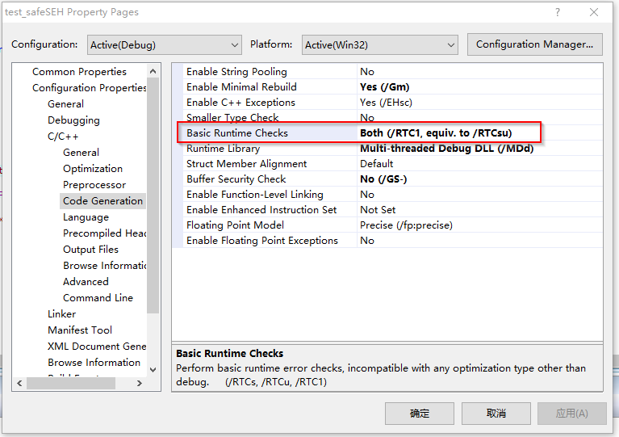
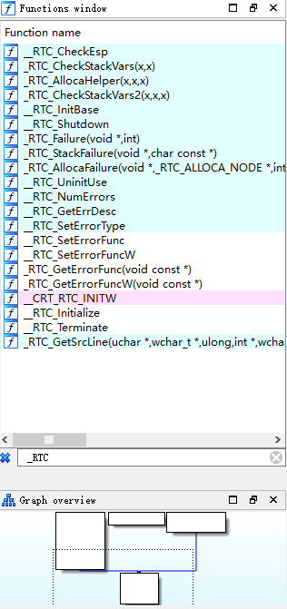
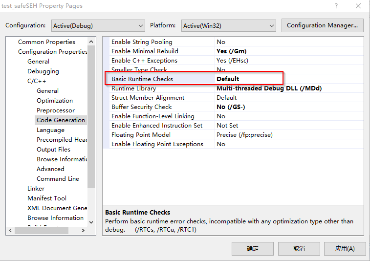
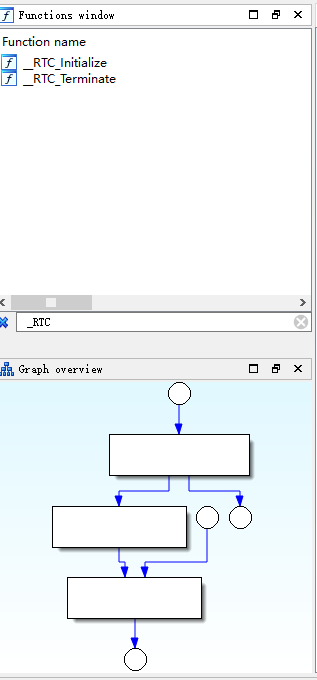
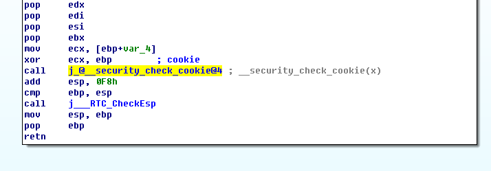
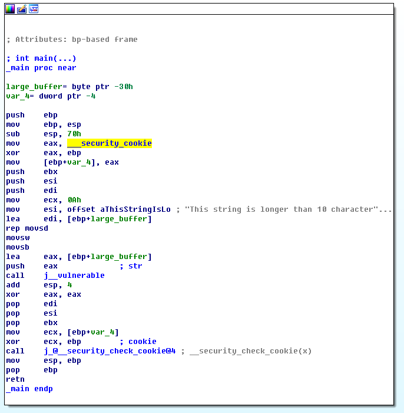

<!DOCTYPE html>
<html lang="en">
<head>
  <meta charset="UTF-8">
<meta name="viewport" content="width=device-width, initial-scale=1, maximum-scale=2">
<meta name="theme-color" content="#222">
<meta name="generator" content="Hexo 6.3.0">
<meta name="google-site-verification" content="Z6SsvW3r4WIkFz1e9zkKO2f0hFIouf3dUGoW4PNdvnI" />
  <link rel="apple-touch-icon" sizes="180x180" href="/images/apple-touch-icon-next.png">
  <link rel="icon" type="image/png" sizes="32x32" href="/images/favicon-32x32-next.png">
  <link rel="icon" type="image/png" sizes="16x16" href="/images/favicon-16x16-next.png">
  <link rel="mask-icon" href="/images/logo.svg" color="#222">

<link rel="stylesheet" href="/css/main.css">


<link rel="stylesheet" href="/lib/font-awesome/css/all.min.css">

<script id="hexo-configurations">
    var NexT = window.NexT || {};
    var CONFIG = {"hostname":"xxxxnnxxxx.github.io","root":"/","scheme":"Muse","version":"7.8.0","exturl":false,"sidebar":{"position":"left","display":"post","padding":18,"offset":12,"onmobile":false},"copycode":{"enable":false,"show_result":false,"style":null},"back2top":{"enable":true,"sidebar":false,"scrollpercent":false},"bookmark":{"enable":false,"color":"#222","save":"auto"},"fancybox":false,"mediumzoom":false,"lazyload":false,"pangu":false,"comments":{"style":"tabs","active":null,"storage":true,"lazyload":false,"nav":null},"algolia":{"hits":{"per_page":10},"labels":{"input_placeholder":"Search for Posts","hits_empty":"We didn't find any results for the search: ${query}","hits_stats":"${hits} results found in ${time} ms"}},"localsearch":{"enable":false,"trigger":"auto","top_n_per_article":1,"unescape":false,"preload":false},"motion":{"enable":true,"async":false,"transition":{"post_block":"fadeIn","post_header":"slideDownIn","post_body":"slideDownIn","coll_header":"slideLeftIn","sidebar":"slideUpIn"}}};
  </script>

  <meta name="description" content="1. Base Runtime Checks(&#x2F;RTC1 …)在vc开发程序的时候，我们在编译代码的时候，可以设置选项：Base Runtime Checks 如下图所示： Base Runtime Checks 那么什么是基础的运行时检查呢？作用是什么？在这个部分，我们可以查看文档 &#x2F;RTC （运行时错误检查） 在汇编中，我们能看到什么？RTC functions 去掉RTC">
<meta property="og:type" content="article">
<meta property="og:title" content="栈相关检查">
<meta property="og:url" content="https://xxxxnnxxxx.github.io/2023/07/05/%E6%A0%88%E7%9B%B8%E5%85%B3%E6%A3%80%E6%9F%A5/index.html">
<meta property="og:site_name" content="xxxxnnxxxx">
<meta property="og:description" content="1. Base Runtime Checks(&#x2F;RTC1 …)在vc开发程序的时候，我们在编译代码的时候，可以设置选项：Base Runtime Checks 如下图所示： Base Runtime Checks 那么什么是基础的运行时检查呢？作用是什么？在这个部分，我们可以查看文档 &#x2F;RTC （运行时错误检查） 在汇编中，我们能看到什么？RTC functions 去掉RTC">
<meta property="og:locale" content="en_US">
<meta property="og:image" content="https://xxxxnnxxxx.github.io/2023/07/05/%E6%A0%88%E7%9B%B8%E5%85%B3%E6%A3%80%E6%9F%A5/base-runtime-checks.png">
<meta property="og:image" content="https://xxxxnnxxxx.github.io/2023/07/05/%E6%A0%88%E7%9B%B8%E5%85%B3%E6%A3%80%E6%9F%A5/RTCfunctions.png">
<meta property="og:image" content="https://xxxxnnxxxx.github.io/2023/07/05/%E6%A0%88%E7%9B%B8%E5%85%B3%E6%A3%80%E6%9F%A5/no-base-runtime-checks.png">
<meta property="og:image" content="https://xxxxnnxxxx.github.io/2023/07/05/%E6%A0%88%E7%9B%B8%E5%85%B3%E6%A3%80%E6%9F%A5/ida-no-base-runtime-checks.png">
<meta property="og:image" content="https://xxxxnnxxxx.github.io/2023/07/05/%E6%A0%88%E7%9B%B8%E5%85%B3%E6%A3%80%E6%9F%A5/buffersecuritycheck.png">
<meta property="og:image" content="https://xxxxnnxxxx.github.io/2023/07/05/%E6%A0%88%E7%9B%B8%E5%85%B3%E6%A3%80%E6%9F%A5/asm-buffersercuritycheck.png">
<meta property="og:image" content="https://xxxxnnxxxx.github.io/2023/07/05/%E6%A0%88%E7%9B%B8%E5%85%B3%E6%A3%80%E6%9F%A5/jmc.png">
<meta property="og:image" content="https://xxxxnnxxxx.github.io/2023/07/05/%E6%A0%88%E7%9B%B8%E5%85%B3%E6%A3%80%E6%9F%A5/jmc2.png">
<meta property="article:published_time" content="2023-07-05T01:51:00.000Z">
<meta property="article:modified_time" content="2023-07-05T01:51:54.819Z">
<meta property="article:author" content="xxxxnnxxxx">
<meta name="twitter:card" content="summary">
<meta name="twitter:image" content="https://xxxxnnxxxx.github.io/2023/07/05/%E6%A0%88%E7%9B%B8%E5%85%B3%E6%A3%80%E6%9F%A5/base-runtime-checks.png">

<link rel="canonical" href="https://xxxxnnxxxx.github.io/2023/07/05/%E6%A0%88%E7%9B%B8%E5%85%B3%E6%A3%80%E6%9F%A5/">


<script id="page-configurations">
  // https://hexo.io/docs/variables.html
  CONFIG.page = {
    sidebar: "",
    isHome : false,
    isPost : true,
    lang   : 'en'
  };
</script>

  <title>栈相关检查 | xxxxnnxxxx</title>
  


  <noscript>
  <style>
  .use-motion .brand,
  .use-motion .menu-item,
  .sidebar-inner,
  .use-motion .post-block,
  .use-motion .pagination,
  .use-motion .comments,
  .use-motion .post-header,
  .use-motion .post-body,
  .use-motion .collection-header { opacity: initial; }

  .use-motion .site-title,
  .use-motion .site-subtitle {
    opacity: initial;
    top: initial;
  }

  .use-motion .logo-line-before i { left: initial; }
  .use-motion .logo-line-after i { right: initial; }
  </style>
</noscript>

</head>

<body itemscope itemtype="http://schema.org/WebPage">
  <div class="container use-motion">
    <div class="headband"></div>

    <header class="header" itemscope itemtype="http://schema.org/WPHeader">
      <div class="header-inner"><div class="site-brand-container">
  <div class="site-nav-toggle">
    <div class="toggle" aria-label="Toggle navigation bar">
      <span class="toggle-line toggle-line-first"></span>
      <span class="toggle-line toggle-line-middle"></span>
      <span class="toggle-line toggle-line-last"></span>
    </div>
  </div>

  <div class="site-meta">

    <a href="/" class="brand" rel="start">
      <span class="logo-line-before"><i></i></span>
      <h1 class="site-title">xxxxnnxxxx</h1>
      <span class="logo-line-after"><i></i></span>
    </a>
  </div>

  <div class="site-nav-right">
    <div class="toggle popup-trigger">
    </div>
  </div>
</div>


<nav class="site-nav">
  <ul id="menu" class="main-menu menu">
        <li class="menu-item menu-item-home">

    <a href="/" rel="section"><i class="fa fa-home fa-fw"></i>Home</a>

  </li>
        <li class="menu-item menu-item-archives">

    <a href="/archives/" rel="section"><i class="fa fa-archive fa-fw"></i>Archives</a>

  </li>
  </ul>
</nav>


</div>
    </header>

    
  <div class="back-to-top">
    <i class="fa fa-arrow-up"></i>
    <span>0%</span>
  </div>


    <main class="main">
      <div class="main-inner">
        <div class="content-wrap">
          

          <div class="content post posts-expand">
            

    
  
  
  <article itemscope itemtype="http://schema.org/Article" class="post-block" lang="en">
    <link itemprop="mainEntityOfPage" href="https://xxxxnnxxxx.github.io/2023/07/05/%E6%A0%88%E7%9B%B8%E5%85%B3%E6%A3%80%E6%9F%A5/">

    <span hidden itemprop="author" itemscope itemtype="http://schema.org/Person">
      <meta itemprop="image" content="/images/avatar.gif">
      <meta itemprop="name" content="xxxxnnxxxx">
      <meta itemprop="description" content="">
    </span>

    <span hidden itemprop="publisher" itemscope itemtype="http://schema.org/Organization">
      <meta itemprop="name" content="xxxxnnxxxx">
    </span>
      <header class="post-header">
        <h1 class="post-title" itemprop="name headline">
          栈相关检查
        </h1>

        <div class="post-meta">
            <span class="post-meta-item">
              <span class="post-meta-item-icon">
                <i class="far fa-calendar"></i>
              </span>
              <span class="post-meta-item-text">Posted on</span>
              

              <time title="Created: 2023-07-05 09:51:00 / Modified: 09:51:54" itemprop="dateCreated datePublished" datetime="2023-07-05T09:51:00+08:00">2023-07-05</time>
            </span>
            <span class="post-meta-item">
              <span class="post-meta-item-icon">
                <i class="far fa-folder"></i>
              </span>
              <span class="post-meta-item-text">In</span>
                <span itemprop="about" itemscope itemtype="http://schema.org/Thing">
                  <a href="/categories/%E6%9D%82%E4%B8%83%E6%9D%82%E5%85%AB/" itemprop="url" rel="index"><span itemprop="name">杂七杂八</span></a>
                </span>
            </span>

          

        </div>
      </header>

    
    
    
    <div class="post-body" itemprop="articleBody">

      
        <h2 id="1-Base-Runtime-Checks-x2F-RTC1-…"><a href="#1-Base-Runtime-Checks-x2F-RTC1-…" class="headerlink" title="1. Base Runtime Checks(&#x2F;RTC1 …)"></a>1. Base Runtime Checks(&#x2F;RTC1 …)</h2><p>在vc开发程序的时候，我们在编译代码的时候，可以设置选项：<code>Base Runtime Checks</code> 如下图所示：</p>
<p><br><center>Base Runtime Checks</center></p>
<h3 id="那么什么是基础的运行时检查呢？作用是什么？"><a href="#那么什么是基础的运行时检查呢？作用是什么？" class="headerlink" title="那么什么是基础的运行时检查呢？作用是什么？"></a><b>那么什么是基础的运行时检查呢？作用是什么？</b><br></h3><p>在这个部分，我们可以查看文档 <a target="_blank" rel="noopener" href="https://docs.microsoft.com/en-us/cpp/build/reference/rtc-run-time-error-checks?view=msvc-160">&#x2F;RTC （运行时错误检查）</a></p>
<h3 id="在汇编中，我们能看到什么？"><a href="#在汇编中，我们能看到什么？" class="headerlink" title="在汇编中，我们能看到什么？"></a><b>在汇编中，我们能看到什么？</b></h3><p><br><center>RTC functions</center></p>
<h3 id="去掉RTC检查"><a href="#去掉RTC检查" class="headerlink" title="去掉RTC检查"></a><b>去掉RTC检查</b></h3><p>如下图，在选项中设置 <code>Default</code> 就可以了</p>


<p>那么在汇编中，现在的情况是什么呢？</p>
<p><br></p>
<p>我们能看到，已经没有了相关的函数，只有一个初始化和结束的函数</p>
<h2 id="2-Buffer-Security-Check-x2F-GS"><a href="#2-Buffer-Security-Check-x2F-GS" class="headerlink" title="2. Buffer Security Check(&#x2F;GS)"></a>2. Buffer Security Check(&#x2F;GS)</h2><p>检测一些缓冲区溢出，这些溢出覆盖了函数的返回地址、异常处理程序地址或某些类型的参数。导致缓冲区溢出是黑客用来利用不强制执行缓冲区大小限制的代码的一种技术。</p>
<h3 id="什么是受保护的？"><a href="#什么是受保护的？" class="headerlink" title="什么是受保护的？"></a><b>什么是受保护的？</b></h3><p>在&#x2F; GS编译器选项保护下列项目：</p>
<ul>
<li><p>函数调用的返回地址。</p>
</li>
<li><p>函数的异常处理程序的地址。</p>
</li>
<li><p>易受攻击的函数参数。</p>
</li>
</ul>
<p>在所有平台上，&#x2F;GS尝试检测缓冲区溢出到返回地址。缓冲区溢出在 x86 和 x64 等平台上更容易被利用，这些平台使用调用约定将函数调用的返回地址存储在堆栈上。</p>
<p>在 x86 上，如果函数使用异常处理程序，编译器会注入安全 cookie 以保护异常处理程序的地址。在帧展开期间检查 cookie。</p>
<p>&#x2F;GS保护传递给函数的易受攻击的参数。易受攻击的参数是指针、C++ 引用、包含指针的 C 结构（C++ POD 类型）或 GS 缓冲区。</p>
<p>在 cookie 和局部变量之前分配了一个易受攻击的参数。缓冲区溢出可以覆盖这些参数。在函数返回和执行安全检查之前，使用这些参数的函数中的代码可能会导致攻击。为了尽量减少这种危险，编译器在函数 prolog 期间制作了易受攻击的参数的副本，并将它们放在任何缓冲区的存储区域之下。</p>
<p>在以下情况下，编译器不会复制易受攻击的参数：</p>
<ul>
<li><p>不包含 GS 缓冲区的函数。</p>
</li>
<li><p>未启用优化（&#x2F;O 选项）。</p>
</li>
<li><p>具有可变参数列表 (…) 的函数。</p>
</li>
<li><p>标有裸体的函数。</p>
</li>
<li><p>在第一条语句中包含内联汇编代码的函数。</p>
</li>
<li><p>参数仅以在缓冲区溢出时不太可能被利用的方式使用。</p>
</li>
</ul>
<h3 id="什么不受保护？"><a href="#什么不受保护？" class="headerlink" title="什么不受保护？"></a><b>什么不受保护？</b></h3><p>在&#x2F;GS编译器选项并不能防止所有的缓冲区溢出的安全攻击。例如，如果对象中有一个缓冲区和一个 vtable，则缓冲区溢出可能会损坏 vtable。</p>
<p>即使您使用&#x2F;GS，也要始终尝试编写没有缓冲区溢出的安全代码。</p>
<p><i>详细的信息可以查看<a target="_blank" rel="noopener" href="https://docs.microsoft.com/en-us/cpp/build/reference/gs-buffer-security-check?view=msvc-160">微软官方文档</a></i></p>
<h3 id="在汇编中我们能看到什么？"><a href="#在汇编中我们能看到什么？" class="headerlink" title="在汇编中我们能看到什么？"></a><b>在汇编中我们能看到什么？</b></h3><p><br><center>Buffer Security Check</center></p>
<h2 id="3-Buffer-Security-Check原理"><a href="#3-Buffer-Security-Check原理" class="headerlink" title="3. Buffer Security Check原理"></a>3. Buffer Security Check原理</h2><p>我们在IDA 中查看反编译汇编代码，如下图：</p>
<p><br/></p>
<p>观看以下代码：</p>
<figure class="highlight plaintext"><table><tr><td class="gutter"><pre><span class="line">1</span><br><span class="line">2</span><br><span class="line">3</span><br><span class="line">4</span><br><span class="line">5</span><br><span class="line">6</span><br><span class="line">7</span><br><span class="line">8</span><br></pre></td><td class="code"><pre><span class="line">var_4= dword ptr -4</span><br><span class="line"></span><br><span class="line">push    ebp</span><br><span class="line">mov     ebp, esp</span><br><span class="line">sub     esp, 70h</span><br><span class="line">mov     eax, ___security_cookie</span><br><span class="line">xor     eax, ebp</span><br><span class="line">mov     [ebp+var_4], eax</span><br></pre></td></tr></table></figure>
<p>其中 <code>___security_cookie</code> 是一个固定值,如下：</p>
<figure class="highlight plaintext"><table><tr><td class="gutter"><pre><span class="line">1</span><br></pre></td><td class="code"><pre><span class="line">___security_cookie dd 0BB40E64Eh</span><br></pre></td></tr></table></figure>

<p>在函数结束位置，我们看到如下汇编：</p>
<figure class="highlight plaintext"><table><tr><td class="gutter"><pre><span class="line">1</span><br><span class="line">2</span><br><span class="line">3</span><br></pre></td><td class="code"><pre><span class="line">mov     ecx, [ebp+var_4]</span><br><span class="line">xor     ecx, ebp        ; cookie</span><br><span class="line">call    j_@__security_check_cookie@4 ; __security_check_cookie(x)</span><br></pre></td></tr></table></figure>
<p>我们查看 <code>__security_check_cookie(x)</code> 函数</p>
<figure class="highlight plaintext"><table><tr><td class="gutter"><pre><span class="line">1</span><br><span class="line">2</span><br><span class="line">3</span><br><span class="line">4</span><br><span class="line">5</span><br><span class="line">6</span><br><span class="line">7</span><br><span class="line">8</span><br><span class="line">9</span><br><span class="line">10</span><br><span class="line">11</span><br><span class="line">12</span><br><span class="line">13</span><br></pre></td><td class="code"><pre><span class="line">; void __fastcall __security_check_cookie(unsigned int cookie)</span><br><span class="line">.text:00411310 @__security_check_cookie@4 proc near    ; CODE XREF: __security_check_cookie(x)j</span><br><span class="line">.text:00411310</span><br><span class="line">.text:00411310 cookie          = dword ptr -4</span><br><span class="line">.text:00411310</span><br><span class="line">.text:00411310                 cmp     ecx, ___security_cookie</span><br><span class="line">.text:00411316                 jnz     short failure</span><br><span class="line">.text:00411318                 rep retn</span><br><span class="line">.text:0041131A ; ---------------------------------------------------------------------------</span><br><span class="line">.text:0041131A</span><br><span class="line">.text:0041131A failure:                                ; CODE XREF: __security_check_cookie(x)+6j</span><br><span class="line">.text:0041131A                 jmp     j____report_gsfailure</span><br><span class="line">.text:0041131A @__security_check_cookie@4 endp</span><br></pre></td></tr></table></figure>

<p>我们比较上面的内容发现，如果在使用过程中，变量改变了，那么就出现错误。所以这样就保证了缓存区溢出造成的漏洞。</p>
<h2 id="参考"><a href="#参考" class="headerlink" title="参考"></a>参考</h2><ol>
<li>目录projects 下有功能 test_safeSEH 和 testc_bufcheck</li>
</ol>
<h2 id="3-x2F-JMC-CheckForDebuggerJustMyCode-4-选项"><a href="#3-x2F-JMC-CheckForDebuggerJustMyCode-4-选项" class="headerlink" title="3. &#x2F;JMC (@__CheckForDebuggerJustMyCode@4) 选项"></a>3. &#x2F;JMC (@__CheckForDebuggerJustMyCode@4) 选项</h2><p>微软官方文档：<a target="_blank" rel="noopener" href="https://learn.microsoft.com/en-us/cpp/build/reference/jmc?view=msvc-170">https://learn.microsoft.com/en-us/cpp/build/reference/jmc?view=msvc-170</a></p>
<p>指定编译器支持 Visual Studio 调试器中的本机 Just My Code 调试。此选项支持允许 Visual Studio 跨过系统、框架、库和其他非用户调用并在调用堆栈窗口中折叠这些调用的用户设置。 &#x2F;JMC 编译器选项从 Visual Studio 2017 版本 15.8 开始可用。</p>
<p>选项位置：</p>
<p></p>
<p>启用 &#x2F;JMC 时，编译器会在函数序言中插入对辅助函数 <code>__CheckForDebuggerJustMyCode</code> 的调用。帮助函数提供支持 Visual Studio 调试器 Just My Code 步骤操作的挂钩。</p>
<p>如果启用了 <code>/JMC</code> 通过反汇编，可以查看如下代码：</p>
<p></p>
<p>启用 <code>/JMC</code> 选项后，PDB 文件会使用额外的行号信息进行注释。在 Visual Studio 2019 版本 16.8 之前的版本中，此信息可能会出现在代码覆盖率报告中，出现在第 15732480 (0xF00F00) 行或 16707566 (0xFEEFEE) 行。这些虚构的行号用作区分用户代码和非用户代码的标记。要在没有这些意外行号的情况下在代码覆盖率报告中包含非用户代码，请使用 <code>/JMC-</code> 选项构建您的代码。</p>

    </div>

    
    
    

      <footer class="post-footer">

        


        
    <div class="post-nav">
      <div class="post-nav-item">
    <a href="/2023/07/04/CVE-2023-21768/" rel="prev" title="星期二补丁- 星期三利用：24 小时内破解 WinSock (afd.sys) 的 Windows 辅助功能驱动程序">
      <i class="fa fa-chevron-left"></i> 星期二补丁- 星期三利用：24 小时内破解 WinSock (afd.sys) 的 Windows 辅助功能驱动程序
    </a></div>
      <div class="post-nav-item"></div>
    </div>
      </footer>
    
  </article>
  
  
  


          </div>
          

<script>
  window.addEventListener('tabs:register', () => {
    let { activeClass } = CONFIG.comments;
    if (CONFIG.comments.storage) {
      activeClass = localStorage.getItem('comments_active') || activeClass;
    }
    if (activeClass) {
      let activeTab = document.querySelector(`a[href="#comment-${activeClass}"]`);
      if (activeTab) {
        activeTab.click();
      }
    }
  });
  if (CONFIG.comments.storage) {
    window.addEventListener('tabs:click', event => {
      if (!event.target.matches('.tabs-comment .tab-content .tab-pane')) return;
      let commentClass = event.target.classList[1];
      localStorage.setItem('comments_active', commentClass);
    });
  }
</script>

        </div>
          
  
  <div class="toggle sidebar-toggle">
    <span class="toggle-line toggle-line-first"></span>
    <span class="toggle-line toggle-line-middle"></span>
    <span class="toggle-line toggle-line-last"></span>
  </div>

  <aside class="sidebar">
    <div class="sidebar-inner">

      <ul class="sidebar-nav motion-element">
        <li class="sidebar-nav-toc">
          Table of Contents
        </li>
        <li class="sidebar-nav-overview">
          Overview
        </li>
      </ul>

      <!--noindex-->
      <div class="post-toc-wrap sidebar-panel">
          <div class="post-toc motion-element"><ol class="nav"><li class="nav-item nav-level-2"><a class="nav-link" href="#1-Base-Runtime-Checks-x2F-RTC1-%E2%80%A6"><span class="nav-number">1.</span> <span class="nav-text">1. Base Runtime Checks(&#x2F;RTC1 …)</span></a><ol class="nav-child"><li class="nav-item nav-level-3"><a class="nav-link" href="#%E9%82%A3%E4%B9%88%E4%BB%80%E4%B9%88%E6%98%AF%E5%9F%BA%E7%A1%80%E7%9A%84%E8%BF%90%E8%A1%8C%E6%97%B6%E6%A3%80%E6%9F%A5%E5%91%A2%EF%BC%9F%E4%BD%9C%E7%94%A8%E6%98%AF%E4%BB%80%E4%B9%88%EF%BC%9F"><span class="nav-number">1.1.</span> <span class="nav-text">那么什么是基础的运行时检查呢？作用是什么？</span></a></li><li class="nav-item nav-level-3"><a class="nav-link" href="#%E5%9C%A8%E6%B1%87%E7%BC%96%E4%B8%AD%EF%BC%8C%E6%88%91%E4%BB%AC%E8%83%BD%E7%9C%8B%E5%88%B0%E4%BB%80%E4%B9%88%EF%BC%9F"><span class="nav-number">1.2.</span> <span class="nav-text">在汇编中，我们能看到什么？</span></a></li><li class="nav-item nav-level-3"><a class="nav-link" href="#%E5%8E%BB%E6%8E%89RTC%E6%A3%80%E6%9F%A5"><span class="nav-number">1.3.</span> <span class="nav-text">去掉RTC检查</span></a></li></ol></li><li class="nav-item nav-level-2"><a class="nav-link" href="#2-Buffer-Security-Check-x2F-GS"><span class="nav-number">2.</span> <span class="nav-text">2. Buffer Security Check(&#x2F;GS)</span></a><ol class="nav-child"><li class="nav-item nav-level-3"><a class="nav-link" href="#%E4%BB%80%E4%B9%88%E6%98%AF%E5%8F%97%E4%BF%9D%E6%8A%A4%E7%9A%84%EF%BC%9F"><span class="nav-number">2.1.</span> <span class="nav-text">什么是受保护的？</span></a></li><li class="nav-item nav-level-3"><a class="nav-link" href="#%E4%BB%80%E4%B9%88%E4%B8%8D%E5%8F%97%E4%BF%9D%E6%8A%A4%EF%BC%9F"><span class="nav-number">2.2.</span> <span class="nav-text">什么不受保护？</span></a></li><li class="nav-item nav-level-3"><a class="nav-link" href="#%E5%9C%A8%E6%B1%87%E7%BC%96%E4%B8%AD%E6%88%91%E4%BB%AC%E8%83%BD%E7%9C%8B%E5%88%B0%E4%BB%80%E4%B9%88%EF%BC%9F"><span class="nav-number">2.3.</span> <span class="nav-text">在汇编中我们能看到什么？</span></a></li></ol></li><li class="nav-item nav-level-2"><a class="nav-link" href="#3-Buffer-Security-Check%E5%8E%9F%E7%90%86"><span class="nav-number">3.</span> <span class="nav-text">3. Buffer Security Check原理</span></a></li><li class="nav-item nav-level-2"><a class="nav-link" href="#%E5%8F%82%E8%80%83"><span class="nav-number">4.</span> <span class="nav-text">参考</span></a></li><li class="nav-item nav-level-2"><a class="nav-link" href="#3-x2F-JMC-CheckForDebuggerJustMyCode-4-%E9%80%89%E9%A1%B9"><span class="nav-number">5.</span> <span class="nav-text">3. &#x2F;JMC (@__CheckForDebuggerJustMyCode@4) 选项</span></a></li></ol></div>
      </div>
      <!--/noindex-->

      <div class="site-overview-wrap sidebar-panel">
        <div class="site-author motion-element" itemprop="author" itemscope itemtype="http://schema.org/Person">
  <p class="site-author-name" itemprop="name">xxxxnnxxxx</p>
  <div class="site-description" itemprop="description"></div>
</div>
<div class="site-state-wrap motion-element">
  <nav class="site-state">
      <div class="site-state-item site-state-posts">
          <a href="/archives/">
        
          <span class="site-state-item-count">2</span>
          <span class="site-state-item-name">posts</span>
        </a>
      </div>
      <div class="site-state-item site-state-categories">
        <span class="site-state-item-count">1</span>
        <span class="site-state-item-name">categories</span>
      </div>
  </nav>
</div>


      </div>

    </div>
  </aside>
  <div id="sidebar-dimmer"></div>


      </div>
    </main>

    <footer class="footer">
      <div class="footer-inner">
        

        

<div class="copyright">
  
  &copy; 
  <span itemprop="copyrightYear">2023</span>
  <span class="with-love">
    <i class="fa fa-heart"></i>
  </span>
  <span class="author" itemprop="copyrightHolder">xxxxnnxxxx</span>
</div>
  <div class="powered-by">Powered by <a href="https://hexo.io/" class="theme-link" rel="noopener" target="_blank">Hexo</a> & <a href="https://muse.theme-next.org/" class="theme-link" rel="noopener" target="_blank">NexT.Muse</a>
  </div>

        


      </div>
    </footer>
  </div>

  
  <script src="/lib/anime.min.js"></script>
  <script src="/lib/velocity/velocity.min.js"></script>
  <script src="/lib/velocity/velocity.ui.min.js"></script>

<script src="/js/utils.js"></script>

<script src="/js/motion.js"></script>


<script src="/js/schemes/muse.js"></script>


<script src="/js/next-boot.js"></script>


  


  

  

</body>
</html>
